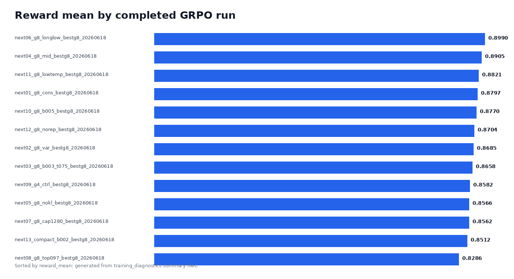
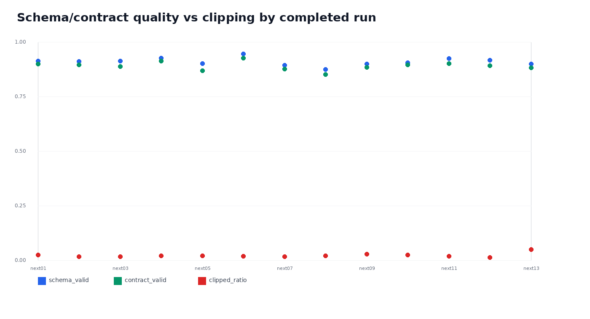

Gemma4 12B Invoice EVR GRPO Technical Report
Main result. GRPO is not finished and should not be declared globally optimal. The first completed algorithm batch proves the infrastructure and reward path are healthy, and gemma4_12b_grpo_next06_g8_longlow_bestg8_20260618 is the current best checkpoint. It should be treated as the new parent model for a second algorithm wave.
Best observed recipe. The strongest line so far is G=8, slim EVR targets, low learning rate, small KL, correct Gemma4 EOS masking, and continuation from the prior best G8 adapter. It reached reward mean 0.8990, schema valid 0.9472, contract valid 0.9278, quote hit 0.9889, clipped ratio 0.0194, and no anomaly steps.
Current Evidence: next06 Is Best, But Not Final
The completed batch fixed the previous failure mode: completion clipping is low, EOS termination is healthy, reward is non-degenerate, and the run artifacts are saved under RDS. The best run is next06, not because it is perfect, but because it combines the highest reward mean with the strongest schema/contract rates and no numerical anomalies.

The chart ranks completed runs by trainer reward mean. The top cluster is close, but next06 has more steps and higher schema/contract quality, so it is a better parent checkpoint than the 50-step alternatives.
| Run | Steps | Reward mean | Schema valid | Contract valid | Quote hit | Clipped ratio | Avg step time |
|---|---|---|---|---|---|---|---|
| next06_g8_longlow_bestg8_20260618 | 90 | 0.8990 | 0.9472 | 0.9278 | 0.9889 | 0.0194 | 137.4s |
| next04_g8_mid_bestg8_20260618 | 50 | 0.8905 | 0.9275 | 0.9150 | 0.9850 | 0.0225 | 138.1s |
| next11_g8_lowtemp_bestg8_20260618 | 50 | 0.8821 | 0.9250 | 0.9025 | 0.9825 | 0.0200 | 140.0s |
| next01_g8_cons_bestg8_20260618 | 50 | 0.8797 | 0.9150 | 0.9000 | 0.9850 | 0.0250 | 138.5s |
| next10_g8_b005_bestg8_20260618 | 50 | 0.8770 | 0.9075 | 0.8975 | 0.9825 | 0.0250 | 141.7s |
| next12_g8_norep_bestg8_20260618 | 50 | 0.8704 | 0.9175 | 0.8925 | 0.9825 | 0.0150 | 141.0s |
| next02_g8_var_bestg8_20260618 | 50 | 0.8685 | 0.9125 | 0.8975 | 0.9725 | 0.0175 | 140.1s |
| next03_g8_b003_t075_bestg8_20260618 | 50 | 0.8658 | 0.9150 | 0.8900 | 0.9800 | 0.0175 | 138.3s |
Stability Signals Are Now Acceptable
The earlier raw-GRPO problem was not subtle: truncated output, missing EOS, zero useful gradients, and wrapper/thought leakage. The completed slim runs no longer show that pattern. Clipped ratio stays near zero, schema validity is mostly above 0.90, and quote hit is near 0.98 on the best lines.

The remaining issue is late-stage reward saturation. Several steps reach reward standard deviation zero, especially when all generations for a prompt become valid. That does not invalidate the run, but it reduces effective gradient. The next wave therefore targets reward dispersion and length/scale bias rather than simply increasing step count.
Algorithm Interpretation
Public GRPO recipes point to the same failure modes we see locally. DeepSeekMath introduced GRPO as a memory-efficient PPO variant for reasoning tasks. DAPO reports that naive GRPO can suffer entropy collapse, reward noise, and instability, and proposes Clip-Higher, dynamic sampling, token-level policy gradient, and overlong shaping. TRL exposes these ideas through loss_type, epsilon_high, mask_truncated_completions, scale_rewards, sequence-level importance sampling, SAPO, and entropy filtering.
For this invoice EVR task, the reward is rule-based, structured, and often low-dispersion once the model learns the schema. That matches the MDP-GRPO warning about homogeneous groups and zero-variance collapse in multi-constraint instruction following. The practical response is not one giant blind run; it is a controlled second wave from next06.
Second Algorithm Wave Submitted For Testing
The new configs continue from next06 and cover five mechanisms: DAPO/token-level loss, Dr.GRPO no-scale, SAPO soft gating, sequence-level importance sampling, and top-entropy/off-policy stabilization. Each run has its own config and run id, so failed experimental objectives do not corrupt the best checkpoint.
| Run | Mechanism | Loss | Scale | Beta | Temp | G | Steps |
|---|---|---|---|---|---|---|---|
| next21_dapo_cliphigh_beta001_80step_20260618 | dapo_token_loss_clip_higher_small_kl | dapo | batch | 0.001 | 0.6 | 8 | 80 |
| next22_dapo_cliphigh_beta000_80step_20260618 | dapo_token_loss_clip_higher_no_kl | dapo | batch | 0.0 | 0.62 | 8 | 80 |
| next23_drgrpo_noscale_lr7e8_80step_20260618 | dr_grpo_no_reward_scaling | dr_grpo | none | 0.01 | 0.55 | 8 | 80 |
| next24_dapo_noscale_cliphigh_80step_20260618 | dapo_no_reward_scaling_clip_higher | dapo | none | 0.001 | 0.6 | 8 | 80 |
| next25_sapo_softgate_beta001_80step_20260618 | sapo_soft_adaptive_policy_optimization | sapo | batch | 0.001 | 0.6 | 8 | 80 |
| next26_sapo_softgate_neg110_80step_20260618 | sapo_stronger_negative_gate | sapo | batch | 0.001 | 0.62 | 8 | 80 |
| next27_luspo_sequence_beta001_60step_20260618 | luspo_sequence_level_is | luspo | batch | 0.001 | 0.6 | 8 | 60 |
| next28_dapo_topentropy02_80step_20260618 | dapo_top_entropy_token_filtering_020 | dapo | batch | 0.001 | 0.62 | 8 | 80 |
| next29_drgrpo_topentropy05_80step_20260618 | dr_grpo_top_entropy_token_filtering_050 | dr_grpo | batch | 0.01 | 0.58 | 8 | 80 |
| next30_dapo_offpolicy_mask05_80step_20260618 | dapo_off_policy_masking | dapo | batch | 0.001 | 0.6 | 8 | 80 |
| next31_drgrpo_refsync_80step_20260618 | dr_grpo_reference_sync | dr_grpo | batch | 0.002 | 0.56 | 8 | 80 |
| next32_drgrpo_lowtemp_lr5e8_120step_20260618 | dr_grpo_low_temp_long_continuation | dr_grpo | batch | 0.01 | 0.45 | 8 | 120 |
| next33_drgrpo_hightemp_dispersion_80step_20260618 | multi_temperature_proxy_high_dispersion | dr_grpo | batch | 0.02 | 0.75 | 8 | 80 |
| next34_dapo_g16_cliphigh_60step_20260618 | dapo_g16_dynamic_sampling_proxy | dapo | batch | 0.001 | 0.68 | 16 | 60 |
Additional aggressive wave. A third wave adds CISPO, VESPO, BNPO, two-sided clipping, min-p sampling, num_iterations=2, and combined entropy/off-policy variants. These are higher-risk experiments and should be judged by completion stability first, then by the next06 promotion thresholds.
Decision Rules For Picking The Next Parent
- Promote a run only if it completes with exit code 0 and has no numerical anomaly steps.
- Prefer reward mean above next06 while keeping schema valid >= 0.95, contract valid >= 0.93, quote hit >= 0.985, clipped ratio <= 0.03.
- Reject a run as parent if it improves reward only by shortening/degenerating completions, losing quote accuracy, or producing zero reward variance for most steps.
- If DAPO/SAPO improves quality without raising clip or KL, use it as the third-wave parent. If not, continue the conservative next06 recipe with lower LR and dev-set audit.
Limitations And Robustness Checks
This report is based on trainer-side reward diagnostics and 16-case generation audits, not a full locked test evaluation. The public strict EVR 720 data is suitable for smoke and algorithm search, but final claims still require the FATURA-only pipeline gate and a larger held-out audit. The 72-case long audits timed out, so they should be rerun selectively on the best two checkpoints after the algorithm wave finishes.
Recommended Next Steps
- Let the pending next14-next20 jobs and the next06 algorithm wave run through the queue.
- When each completes, regenerate this report and compare against next06 using the thresholds above.
- Run a 72-case dev audit only for the top two candidates; do not spend audit GPU on every exploratory variant.
- Once FATURA data is ready and passes strict split/source/quote gates, train the selected algorithm recipe on FATURA instead of declaring strict EVR 720 as final.
Sources
- Hugging Face TRL GRPOTrainer documentation
- DeepSeekMath: Pushing the Limits of Mathematical Reasoning in Open Language Models
- DAPO: An Open-Source LLM Reinforcement Learning System at Scale
- Soft Adaptive Policy Optimization
- MDP-GRPO: Stabilized Group Relative Policy Optimization for Multi-Constraint Instruction Following
Supporting files: completed_run_metrics.csv, algorithm_wave_manifest.json, and the per-run RDS visualizations under /rds-d6/user/cx272/hpc-work/outputs/grpo-inf/runs.